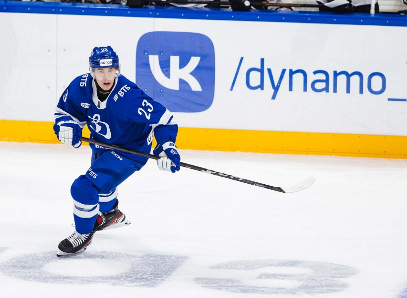
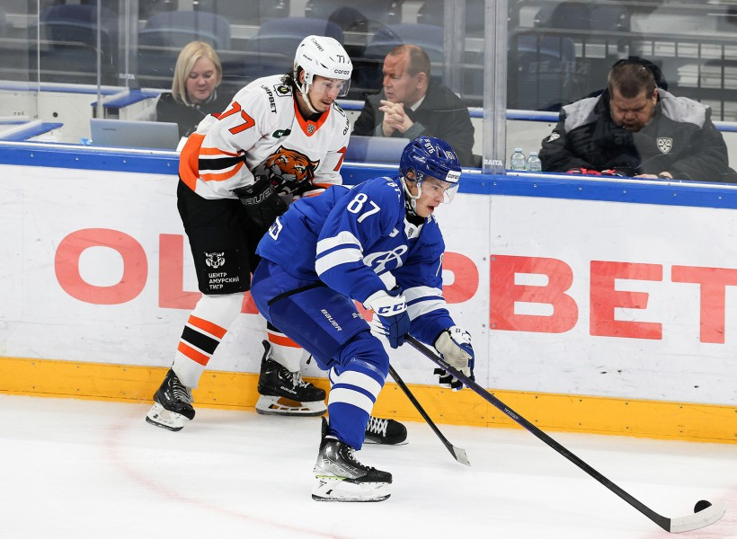
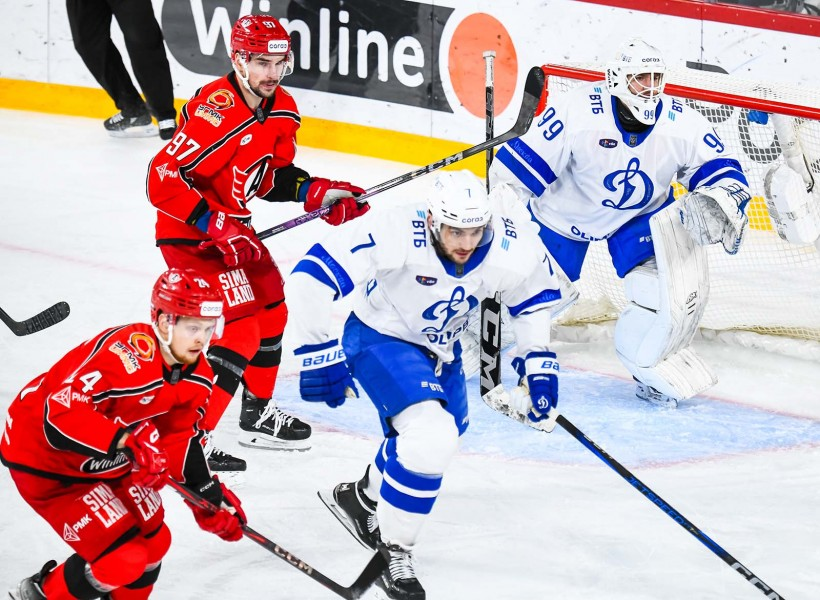

{% extends "base.html" %}

{% block title %}
Жизнь клуба
{% endblock %}


{% block content %}

<div class="container">
    <div class="row">
        <div class="col text-center">
            <h1>Последние новости из жизни клуба</h1>
        </div>
    </div>
</div>
<h4> 29/10/2024  «Раз жизнь дает шанс, за него надо бороться»</h4>

 <a href= "https://dynamo.ru/news/230815-artem_kudashov____raz_jizn__daet_shans__za_nego_nado_borot_sya__">Артем Кудашов</a>
<h4> 28/10/2024  «Тигр на переправе. «Динамо» примет «Амур»»</h4>

<a href= "https://dynamo.ru/news/230814-tigr_na__pereprave____dinamo___primet___amur__">29 октября динамовцы начнут домашнюю серию игр из пяти матчей</a>
<h4> 29/10/2024  ««Каждый делает свой вклад в общий успех»»</h4>

<a href= "https://dynamo.ru/news/230813-maksim_djioshvili____kajdyiy_delaet_svoy_vklad_v_obschiy_uspeh__">Нападающий бело-голубых подвел итог своей 150-й игры в КХЛ</a>

{% endblock %}
